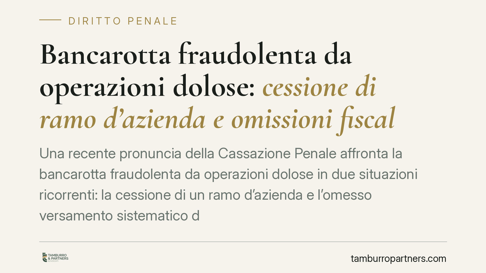

Bancarotta fraudolenta da operazioni dolose: cessione di ramo d'azienda e omissioni fiscali sistematiche
Una recente pronuncia della Cassazione Penale affronta la bancarotta fraudolenta da operazioni dolose in due situazioni ricorrenti: la cessione di un ramo d'azienda e l'omesso versamento sistematico di imposte e contributi. Il tema interessa ogni imprenditore, perché segna il confine tra scelte gestionali legittime e condotte che, nella crisi, diventano penalmente rilevanti.

Il caso
La questione nasce da due profili che spesso si presentano insieme nelle vicende d'impresa in difficoltà: la cessione di un ramo d'azienda a ridosso dell'aggravarsi della crisi e il mancato pagamento, protratto nel tempo, di imposte e contributi previdenziali.
Il nodo è stabilire quando questi comportamenti restino nell'alveo delle scelte imprenditoriali e quando, invece, integrino la bancarotta fraudolenta da operazioni dolose, con conseguente responsabilità penale dell'amministratore.
Inquadramento normativo
La fattispecie è prevista dall'art. 223, comma 2, n. 2, del R.D. 267/1942 (legge fallimentare), che punisce gli amministratori i quali hanno cagionato, o concorso a cagionare, il dissesto della società mediante operazioni dolose. La disciplina è oggi raccordata nel Codice della crisi d'impresa e dell'insolvenza (D.Lgs. 14/2019), il cui art. 329 riproduce i reati societari fallimentari per le procedure aperte sotto la nuova normativa.
Le "operazioni dolose" non richiedono un atto ingannatorio in senso stretto, né artifici o raggiri. Secondo l'orientamento consolidato della Cassazione, consistono nell'abuso dei poteri gestori o nella violazione dei doveri propri dell'amministratore, che si traducono in un depauperamento o in un aggravamento del dissesto. Rileva, in questa prospettiva, l'omissione sistematica e consapevole degli obblighi, non il singolo inadempimento.
Le operazioni dolose e il ruolo dell'omissione sistematica
Il punto centrale è la distinzione tra inadempimento occasionale e omissione sistematica.
Il mancato pagamento sporadico di un tributo, legato a una temporanea tensione di liquidità, non basta a integrare il reato. Diverso è il caso in cui l'omesso versamento di imposte e contributi diventi una scelta gestionale strutturale: l'impresa continua a operare scaricando sistematicamente i costi fiscali e previdenziali, finanziando di fatto l'attività con risorse che non le appartengono.
In questa seconda ipotesi l'omissione reiterata e consapevole diventa la modalità con cui si aggrava il dissesto. È qui che la condotta assume rilievo penale: non per la singola mancanza, ma per il disegno complessivo che la sorregge.
La cessione del ramo d'azienda
Simili considerazioni valgono per la cessione di un ramo d'azienda.
L'operazione è di per sé lecita e frequente nella gestione ordinaria. Diventa però sospetta quando interviene in prossimità della crisi e presenta indici di anomalia. Gli elementi da valutare sono tre: la congruità del corrispettivo rispetto al valore reale del compendio ceduto; la tempistica dell'operazione rispetto all'emersione dello stato di difficoltà; la giustificazione economica concreta della scelta.
Una cessione a prezzo incongruo, in un momento in cui il dissesto è già percepibile e priva di una ragione economica verificabile, può essere letta come svuotamento del patrimonio a danno dei creditori. In tal caso il perimetro dell'operazione dolosa si allarga fino a comprendere l'intera operazione straordinaria.
Implicazioni pratiche
Per l'imprenditore e per l'amministratore il messaggio è chiaro: nella fase di crisi ogni decisione gestionale va valutata anche sul piano penale, non solo su quello civilistico o fiscale.
Contano la tracciabilità delle scelte, la loro coerenza economica e la capacità di dimostrarne la ragionevolezza al momento in cui sono state assunte. Il curatore fallimentare, nella ricostruzione successiva, esamina proprio la sequenza delle operazioni e la loro giustificazione.
La soglia di rischio non è l'errore gestionale, ma la condotta sistematica che sacrifica i creditori a vantaggio della prosecuzione dell'attività o di terzi.
Cosa fare in concreto
- Monitorare con continuità lo stato di solvibilità e intervenire tempestivamente ai primi segnali di crisi, ricorrendo agli strumenti di composizione previsti dal Codice della crisi.
- Evitare l'accumulo sistematico di debiti fiscali e previdenziali come forma impropria di finanziamento dell'attività.
- Sottoporre le operazioni straordinarie, in particolare le cessioni di ramo d'azienda, a perizia indipendente che attesti la congruità del corrispettivo.
- Documentare le decisioni gestionali con verbali e pareri, così da ricostruire le ragioni delle scelte in sede processuale.
- Verificare la coerenza tra tempistica delle operazioni ed emersione della crisi, conservando evidenza delle valutazioni effettuate.
Contributo informativo a cura di Tamburro & Partners Avvocati - Avv. Giuseppe Tamburro. Non costituisce parere legale.
Ogni condominio ha una storia a sé.
Se gestisci un'amministrazione e vuoi un confronto su una specifica questione condominiale, scrivi allo studio. Ti rispondiamo entro un giorno lavorativo.